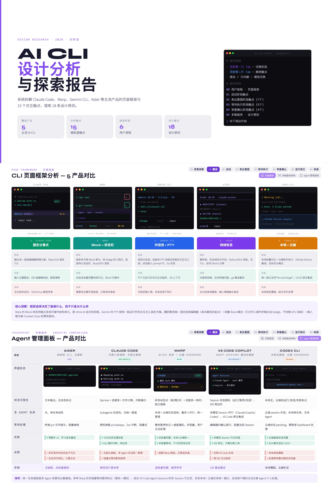
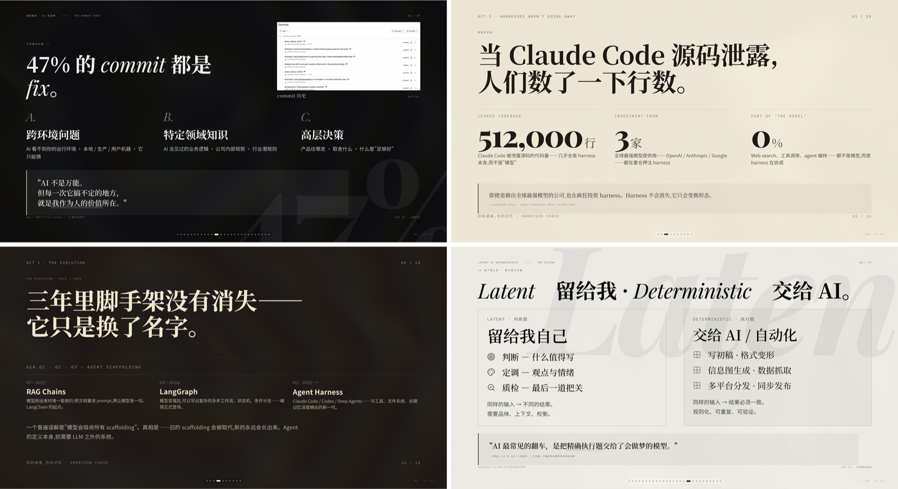
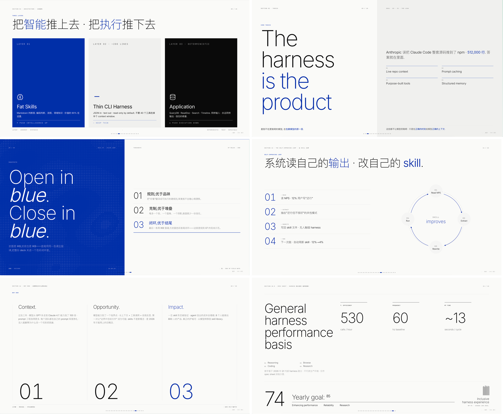
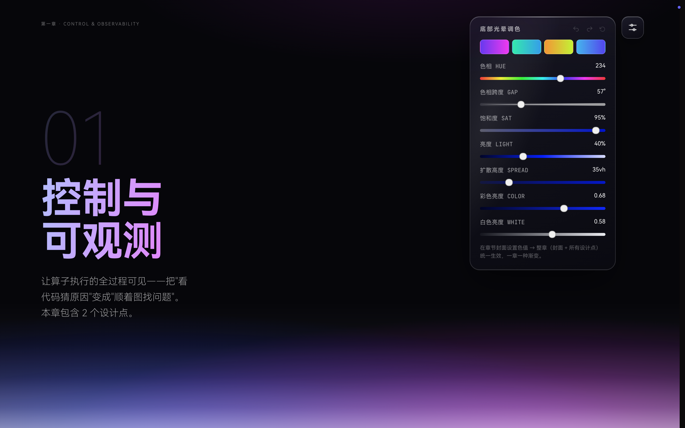
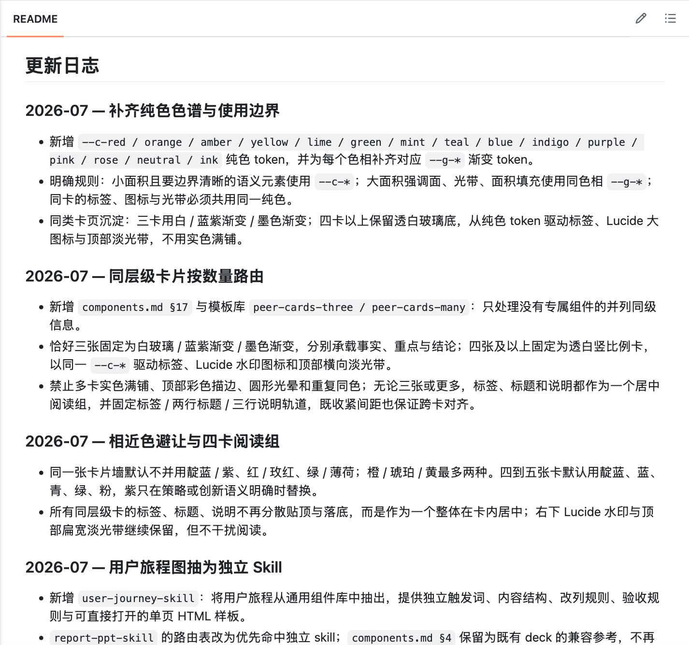
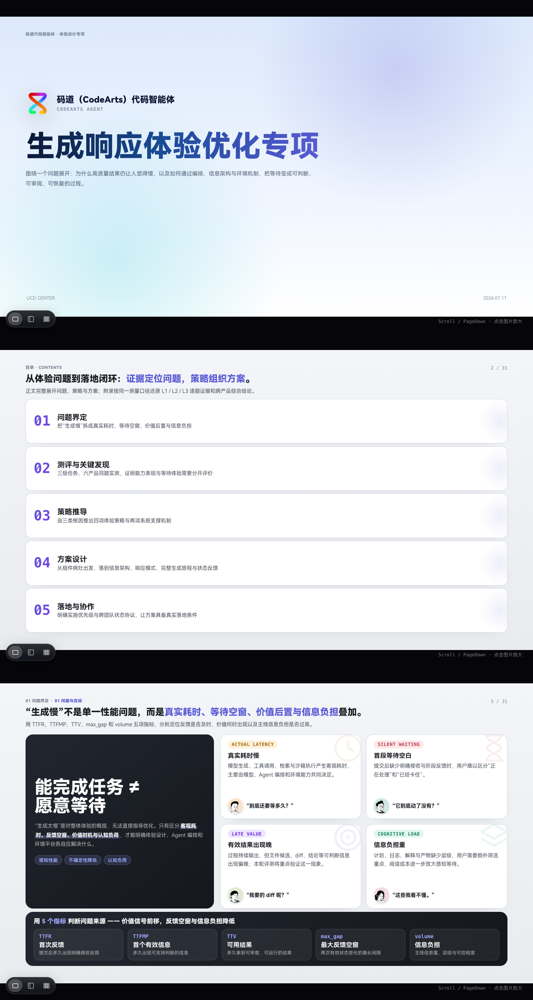
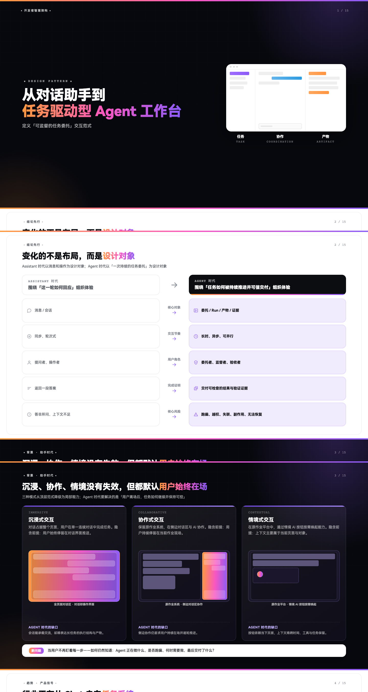
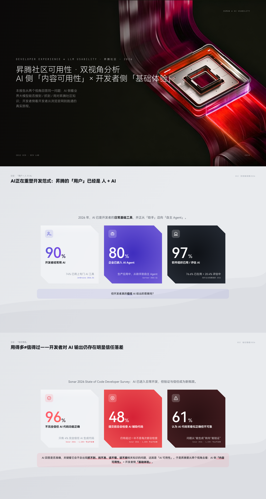

01
背景
Context
已有可视化能力开源 Skill 观察
说明为什么需要专属汇报材料系统
面向产品、设计与研究汇报的网页 PPT Skill：用精调模板、组件和交互 runtime，承接从洞察到方案的完整叙事。
此前的竞品分析 Skill 已验证：复杂研究内容可以通过可视化结构被清楚组织。

我们的观察是：开源 Skill 已能生成风格化演示，却主要服务单一观点的讲述。


扩展的重点不是重做演示，而是把已有能力补成设计师可复用的材料系统。
横向对照 · 框架 · 优势 · 局限
旅程 · 画像 · 推导
可讲 · 可复用 · 可交付
从日常汇报中的真实任务出发，例如用户研究、方案讲解、项目进展。
围绕具体信息关系选择版式，调整灰底分析 / 黑底设计点、图文比例、信息层级。
灰底 + 透白卡承接高密度事实
黑底 + 光晕突出设计主张
检查图片是否完整、文字是否溢出、层级和对齐是否成立。
将验证过的模板、语言规范、视觉 token、交互 runtime写入 Skill。
flowchart LR
subgraph LEFT[" "]
direction TB
RESEARCH["<div class='mmd-card research'><div class='mmd-card-head'><b>用户研究与洞察</b><small>USER INSIGHT</small></div><p>从用户原声、全链路旅程到三种信息密度的用户画像。</p><div class='mmd-tiles'><figure class='mmd-tile'><img src='assets/template-tree/voc-wall.jpg' /><figcaption>用户反馈墙</figcaption></figure><figure class='mmd-tile'><img src='assets/template-tree/user-journey.jpg' /><figcaption>用户旅程</figcaption></figure><figure class='mmd-tile'><img src='assets/template-tree/persona-deep.jpg' /><figcaption>单人用户画像</figcaption></figure><figure class='mmd-tile'><img src='assets/template-tree/persona-compare.jpg' /><figcaption>多人用户对比</figcaption></figure><figure class='mmd-tile'><img src='assets/template-tree/persona-board.jpg' /><figcaption>用户画像白板</figcaption></figure></div></div>"]:::transparent
ANALYSIS["<div class='mmd-card analysis'><div class='mmd-card-head'><b>设计问题与机会分析</b><small>PROBLEM / OPPORTUNITY</small></div><p>把比较、关系、机会与证据收束为可讨论的设计判断。</p><div class='mmd-tiles'><figure class='mmd-tile'><img src='assets/template-tree/competitive-compare.jpg' /><figcaption>竞品对比</figcaption></figure><figure class='mmd-tile'><img src='assets/template-tree/stakeholder-map.jpg' /><figcaption>生态干系人地图</figcaption></figure><figure class='mmd-tile'><img src='assets/template-tree/opportunity-matrix.jpg' /><figcaption>机会优先级矩阵</figcaption></figure><figure class='mmd-tile'><img src='assets/template-tree/score-heatmap.jpg' /><figcaption>多维评分热力图</figcaption></figure><figure class='mmd-tile'><img src='assets/template-tree/experience-architecture.jpg' /><figcaption>体验架构</figcaption></figure><figure class='mmd-tile'><img src='assets/template-tree/evidence-matrix.jpg' /><figcaption>证据矩阵</figcaption></figure><figure class='mmd-tile'><img src='assets/template-tree/derivation-flow.jpg' /><figcaption>问题到结论推导</figcaption></figure></div></div>"]:::transparent
end
ROOT["<div class='mmd-root'><small>CONTENT ROUTER</small><b>Report PPT Skill</b></div>"]:::transparent
subgraph RIGHT[" "]
direction TB
PROGRESS["<div class='mmd-card progress'><div class='mmd-card-head'><b>数据呈现与项目进展</b><small>DATA / ROADMAP</small></div><p>把关键数字、重点信息与阶段推进节奏放在同一组。</p><div class='mmd-tiles'><figure class='mmd-tile'><img src='assets/template-tree/metric-pills.jpg' /><figcaption>关键指标概览</figcaption></figure><figure class='mmd-tile'><img src='assets/template-tree/data-highlight.jpg' /><figcaption>数据重点解读</figcaption></figure><figure class='mmd-tile'><img src='assets/template-tree/roadmap.jpg' /><figcaption>项目路线图</figcaption></figure></div></div>"]:::transparent
DESIGN["<div class='mmd-card design'><div class='mmd-card-head'><b>设计点表达</b><small>DESIGN EXPRESSION</small></div><p>依内容密度选择章节封、左右图文、上下 hero 或图文设计点。</p><div class='mmd-tiles'><figure class='mmd-tile'><img src='assets/template-tree/design-chapter-cover.png' /><figcaption>设计章节封面</figcaption></figure><figure class='mmd-tile'><img src='assets/template-tree/design-left-right.jpg' /><figcaption>左文右图要点页</figcaption></figure><figure class='mmd-tile'><img src='assets/template-tree/design-hero.jpg' /><figcaption>大图设计点页</figcaption></figure><figure class='mmd-tile'><img src='assets/template-tree/design-learning.jpg' /><figcaption>图文设计点页</figcaption></figure></div></div>"]:::transparent
end
RESEARCH --> ROOT
ANALYSIS --> ROOT
ROOT --> PROGRESS
ROOT --> DESIGN
classDef transparent fill:transparent,stroke:transparent,color:#20242D
style LEFT fill:transparent,stroke:transparent
style RIGHT fill:transparent,stroke:transparent
linkStyle default stroke:#9BA5B4,stroke-width:1.2px
模板页数量对比：同一套设计汇报任务，需要的不是更多同款版式，而是不同信息关系的专属表达。
标题、图片与基础叙述可以完成；遇到旅程、角色关系或机会判断时，往往只能用同一种图文结构拼接，重点关系难以被看见。
用户研究、设计分析、数据进展与设计点各有对应结构；把证据、判断和方案放进合适的表达骨架，无需为复杂内容反复造版。
多数开源 PPT Skill 默认使用同一种信息密度：适合单一观点，却难承接研究、项目推进与方案论证中的多层事实。
页面结构相近；复杂关系一多，往往只能继续叠加文字或拆散表达。
从简洁章节封到研究矩阵、旅程与对照页，让高密度内容仍保留清晰层级。

此前，材料生成主要依赖作者或模型的临场判断，即使版式正确，文案仍容易出现标题空泛、证据与方案混写、设计点只讲感受等问题。
从整体使用反馈来看，用户在首次进入、环境处理和调试过程中会有不同程度的问题，因此需要围绕相关流程进行优化，进一步提升用户的使用感受。
通过优化任务状态相关的展示和操作方式，帮助用户更好地理解任务流程与当前情况，并在不同场景下获得更加清晰、高效的使用体验。
访谈中反复出现“找不到入口”“环境配置卡住”“调试无反馈”；因此判断，首次任务的阻断集中在开始、配置和定位问题三个阶段。
在任务过程中持续呈现当前进度、阻断原因与可执行操作，让用户知道现在发生什么、下一步能做什么。
鼠标靠近底部才出现，平时不打断阅读；上一页、页码、下一页、总览和全屏始终在同一位置。
开源网页 PPT 常只提供左右翻页；作者可为 Report PPT Skill 按材料节奏选择过渡方式。

基于本 Skill 所形成的材料，直接支撑面向计算、华为云、装备部等产品线的多个产品汇报。


